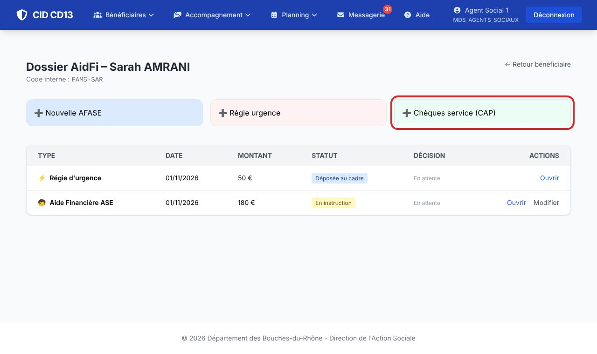
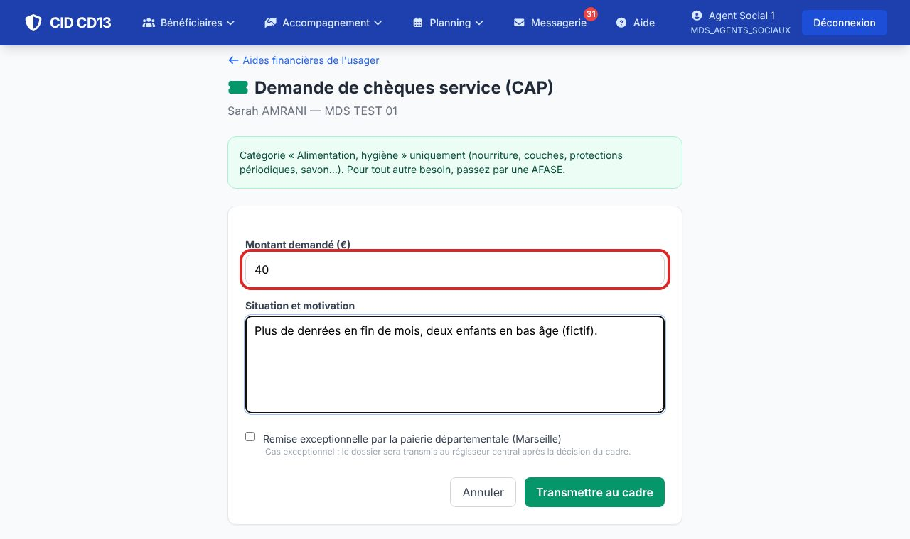
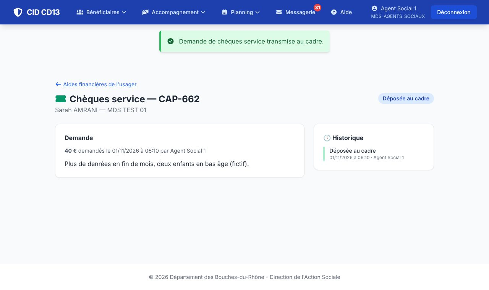

1Ouvrir la demande

- Fiche de l'usager → Aides financières → Chèques service (CAP).
2Remplir et transmettre


- Indiquez le montant demandé et la situation qui le motive.
- Cochez la remise exceptionnelle par la paierie départementale seulement dans un cas exceptionnel : le dossier ira au régisseur central après la décision.
- Cliquez sur Transmettre au cadre : la demande est « Déposée au cadre ».
Les CAP couvrent uniquement l'alimentation et l'hygiène (nourriture, couches, protections périodiques, savon…). Pour un autre besoin, faites une AFASE.
Bon à savoir
- Les chèques existent en 10, 20 et 30 € : demandez un montant qui se compose avec ces valeurs.
- Après l'accord, le cadre vous remet les chèques pour l'usager : vous signez tous les trois la feuille de remise.
Et ensuite ?
Cliquez sur une image pour l'agrandir. Le cadre rouge montre où cliquer ou quoi remplir. Toutes les données affichées sont fictives.